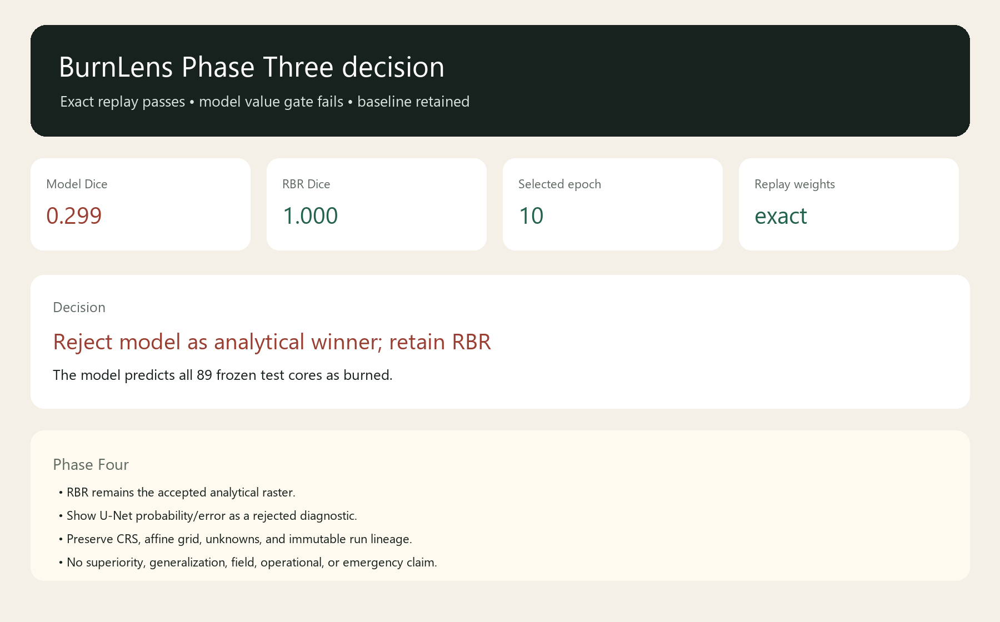

BURNLENS / PHASE THREE / ISSUE #566 / U06
The model is reproducible. It is not the winner.
The U-Net predicts all 89 selected test cores as burned. This is a valid trained/evaluated artifact, not an accepted model, ground truth, generalization result, or operational product.

What passed
- All 35 train/validation history rows reproduce exactly.
- Selected epoch 10, final epoch 35, and weights SHA-256
703d92577e2b82a4cfdec0c5e43b8d7a064253483de4ccea909209f54b802334reproduce. - Immutable U05 probabilities, predictions, denominators, and baseline decision reverify without a second source test-array opening.
What failed
The model-value gate. Event-class macro Dice is 0.2987, macro IoU 0.2147, and worst-event Dice 0.2642, versus RBR 1.0 on all three. The model is rejected as the analytical winner.
Phase Four handoff
RBR remains the accepted method. Show the frozen U-Net probability/error evidence as a visibly rejected model-bearing diagnostic, never as the accepted perimeter.
Inspect the evidence
Boundary
No second test opening, model acceptance, model release, georeferenced inference, deployment, field validation, generalization, or operational/emergency claim exists.
Trace: commit 90ab4ab42d6ceb11c2987efb0b737c016712cea8 · run BL-2026-07-25-p3o1-t01-u06-replay-r003 · software 0.52.0 · package burnlens-unet-rejected-package-v0.1.1 · AOI aoi-darlene3-model-v0.2.0 · model burnlens-unet-binary-v0.1.0 · dataset burnlens-dataset-v0.1.0 · split burnlens-whole-event-split-v0.1.0.